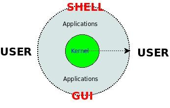

准备工作
前言
到最后一节来写“开篇”，确实有点古怪。不过，在第一篇（数值操作）的开头实际上也算是一个小的开篇，那里提到整个系列的前提是需要有一定的 Shell 编程基础，因此，为了能够让没有 Shell 编程基础的读者也可以阅读这个系列，我到最后来重写这个开篇。开篇主要介绍什么是 Shell，Shell 运行环境，Shell 基本语法和调试技巧。
什么是 Shell
首先让我们从下图看看 Shell 在整个操作系统中所处的位置吧，该图的外圆描述了整个操作系统（比如 Debian/Ubuntu/Slackware 等），内圆描述了操作系统的核心（比如 Linux Kernel），而 Shell 和 GUI 一样作为用户和操作系统之间的接口。

GUI 提供了一种图形化的用户接口，使用起来非常简便易学；而 Shell 则为用户提供了一种命令行的接口，接收用户的键盘输入，并分析和执行输入字符串中的命令，然后给用户返回执行结果，使用起来可能会复杂一些，但是由于占用的资源少，而且在操作熟练以后可能会提高工作效率，而且具有批处理的功能，因此在某些应用场合还非常流行。
Shell 作为一种用户接口，它实际上是一个能够解释和分析用户键盘输入，执行输入中的命令，然后返回结果的一个解释程序（Interpreter，例如在 linux 下比较常用的 Bash），我们可以通过下面的命令查看当前的 Shell ：
$ echo $Shell
/bin/bash
$ ls -l /bin/bash
-rwxr-xr-x 1 root root 702160 2008-05-13 02:33 /bin/bash
该解释程序不仅能够解释简单的命令，而且可以解释一个具有特定语法结构的文件，这种文件被称作脚本（Script）。它具体是如何解释这些命令和脚本文件的，这里不深入分析，请看我在 2008 年写的另外一篇文章：《Linux命令行上程序执行的一刹那》。
既然该程序可以解释具有一定语法结构的文件，那么我们就可以遵循某一语法来编写它，它有什么样的语法，如何运行，如何调试呢？下面我们以 Bash 为例来讨论这几个方面。
搭建运行环境
为了方便后面的练习，我们先搭建一个基本运行环境：在一个 Linux 操作系统中，有一个运行有 Bash 的命令行在等待我们键入命令，这个命令行可以是图形界面下的 Terminal （例如 Ubuntu 下非常厉害的 Terminator），也可以是字符界面的 Console （可以用 CTRL+ALT+F1~6 切换），如果你发现当前 Shell 不是 Bash，请用下面的方法替换它：
$ chsh $USER -s /bin/bash
$ su $USER
或者是简单地键入Bash：
$ bash
$ echo $Shell # 确认一下
/bin/bash
如果没有安装 Linux 操作系统，也可以考虑使用一些公共社区提供的 Linux 虚拟实验服务，一般都有提供远程 Shell，你可以通过 Telnet 或者是 Ssh 的客户端登录上去进行练习。
有了基本的运行环境，那么如何来运行用户键入的命令或者是用户编写好的脚本文件呢 ?
假设我们编写好了一个 Shell 脚本，叫 test.sh 。
第一种方法是确保我们执行的命令具有可执行权限，然后直接键入该命令执行它：
$ chmod +x /path/to/test.sh
$ /path/to/test.sh
第二种方法是直接把脚本作为 Bash 解释器的参数传入：
$ bash /path/to/test.sh
或
$ source /path/to/test.sh
或
$ . /path/to/test.sh
基本语法介绍
先来一个 Hello, World 程序。
下面来介绍一个 Shell 程序的基本结构，以 Hello, World 为例：
#!/bin/bash -v
# test.sh
echo "Hello, World"
把上述代码保存为 test.sh，然后通过上面两种不同方式运行，可以看到如下效果。
方法一：
$ chmod +x test.sh
$ ./test.sh
./test.sh
#!/bin/bash -v
echo "Hello, World"
Hello, World
方法二：
$ bash test.sh
Hello, World
$ source test.sh
Hello, World
$ . test.sh
Hello, World
我们发现两者运行结果有区别，为什么呢？这里我们需要关注一下 test.sh 文件的内容，它仅仅有两行，第二行打印了 Hello, World，两种方法都达到了目的，但是第一种方法却多打印了脚本文件本身的内容，为什么呢？
原因在该文件的第一行，当我们直接运行该脚本文件时，该行告诉操作系统使用用#! 符号之后面的解释器以及相应的参数来解释该脚本文件，通过分析第一行，我们发现对应的解释器以及参数是 /bin/bash -v，而 -v 刚好就是要打印程序的源代码；但是我们在用第二种方法时没有给 Bash 传递任何额外的参数，因此，它仅仅解释了脚本文件本身。
其他语法细节请直接看《Shell编程学习笔记》即本书后面的附录一。
Shell 程序设计过程
Shell 语言作为解释型语言，它的程序设计过程跟编译型语言有些区别，其基本过程如下：
- 设计算法
- 用 Shell 编写脚本程序实现算法
- 直接运行脚本程序
可见它没有编译型语言的"麻烦的"编译和链接过程，不过正是因为这样，它出错时调试起来不是很方便，因为语法错误和逻辑错误都在运行时出现。下面我们简单介绍一下调试方法。
调试方法介绍
可以直接参考资料：Shell 脚本调试技术 或者 BASH 的调试手段。
小结
Shell 语言作为一门解释型语言，可以使用大量的现有工具，包括数值计算、符号处理、文件操作、网络操作等，因此，编写过程可能更加高效，但是因为它是解释型的，需要在执行过程中从磁盘上不断调用外部的程序并进行进程之间的切换，在运行效率方面可能有劣势，所以我们应该根据应用场合选择使用 Shell 或是用其他的语言来编程。